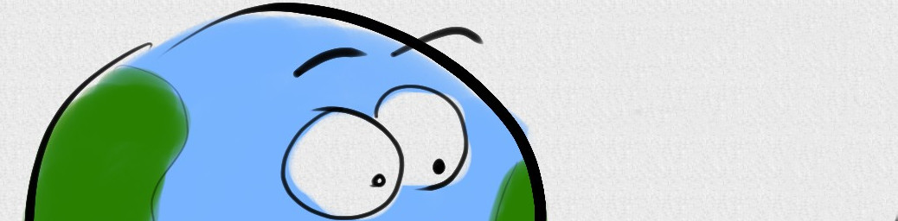

The Little Planet That Could
January 20, 2016

I gave a Wednesday evening public talk in January with the title of “Earth: The Little Planet That Could”. The talk was in the form of a children’s picture book about a little planet called E, and followed its journey as it grew up into the lovely lush watery planet that we call home. Then we got to hear about all of the things that went wrong in other systems: planets that never formed, planets that were destroyed, planets that were unsuitable for life. I finished with a discussion of the concept of habitability, what makes us “special”, and why life might be more widespread than we initially thought.
We had near-record turnout with about 260 people showing up. Unfortunately we couldn’t fit everyone inside the lecture theatre for the talk, but as it was a beautiful clear night at least no-one had to miss out on the stargazing.
If you’re reading this after having seen the presentation, you may have noticed that I made a mistake! I claimed that the odds of the lottery numbers coming out as 1 1 1 1 1 1 were identical to any other combination. Of course, this isn’t true: in the UK and in most other countries, lottery numbers are drawn without replacement, so any given number can’t come up more than once. For the purposes of the argument I was trying to make, just pretend I said that they came out as 1 2 3 4 5 6 in that order. That’s equally likely as any other permutation—odds of 1 in 2,763,633,600—but it’s still a pattern that we naturally find hard to believe could happen by chance. This was part of a broader point I wanted to make about what being “special” means: just because something is rare doesn’t automatically mean that it’s special.